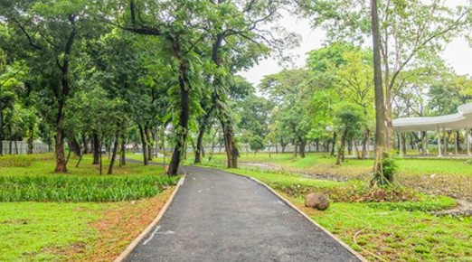

Selamat Datang
Selamat datang di website Jejak Ekosistem Kota. Website ini membahas pentingnya ruang hijau dan keanekaragaman hayati di lingkungan perkotaan. Melalui pengamatan sederhana, kita dapat mengenali kondisi lingkungan sekitar.
Tujuan Website
Website ini bertujuan memberikan informasi mengenai lingkungan perkotaan serta mengajak masyarakat untuk lebih peduli terhadap kelestarian ruang hijau.
Komponen Lingkungan yang Diamati
Beberapa komponen lingkungan yang dapat diamati di taman kota antara lain:
- Pohon dan tanaman peneduh.
- Burung dan kupu-kupu.
- Serangga di lingkungan taman.
- Kebersihan area taman.
- Kondisi fasilitas umum.
Gambar Ruang Hijau Kota

Ruang hijau memiliki manfaat untuk menjaga kualitas udara, memberikan tempat hidup bagi organisme, dan menciptakan lingkungan yang nyaman.
Contoh Data Pengamatan
Berikut merupakan contoh data objek yang dapat ditemukan ketika melakukan pengamatan di taman kota.
| No | Objek Pengamatan | Hal yang Diamati |
|---|---|---|
| 1 | Pohon | Jenis dan kondisi daun |
| 2 | Burung | Warna dan perilaku |
| 3 | Kupu-kupu | Warna dan aktivitas |
| 4 | Taman | Kebersihan lingkungan |
Pentingnya Menjaga Ruang Hijau
Menjaga ruang hijau merupakan tanggung jawab bersama. Dengan melakukan pengamatan dan menjaga kebersihan lingkungan, kita dapat membantu mempertahankan keseimbangan ekosistem perkotaan.